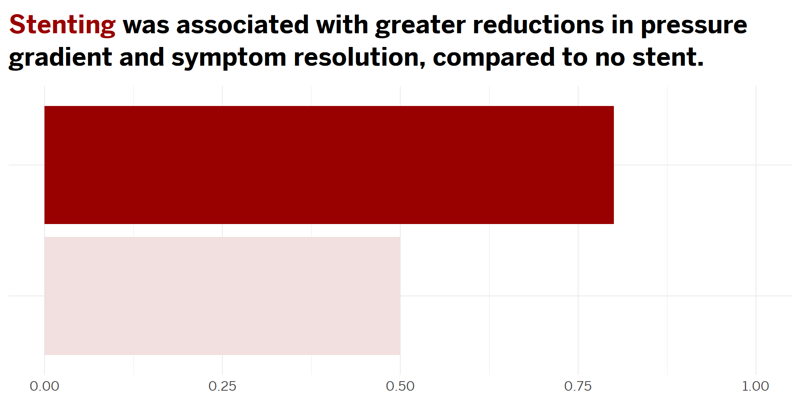
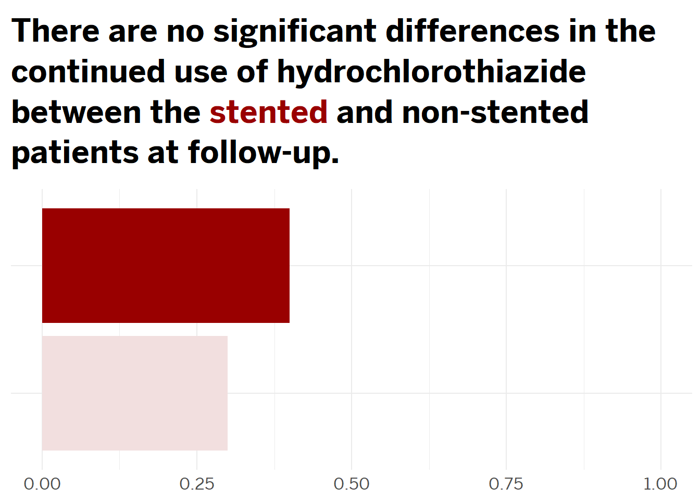
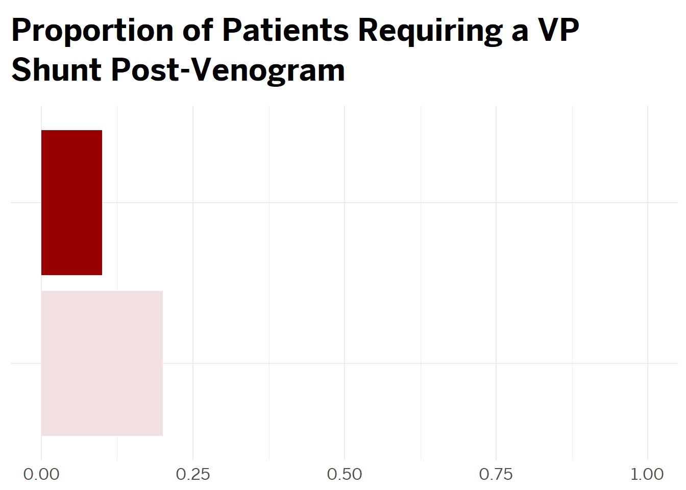
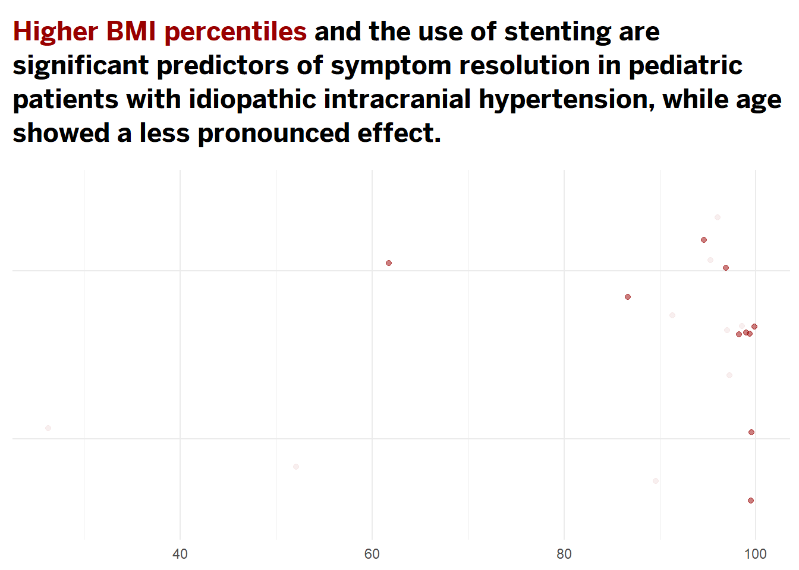
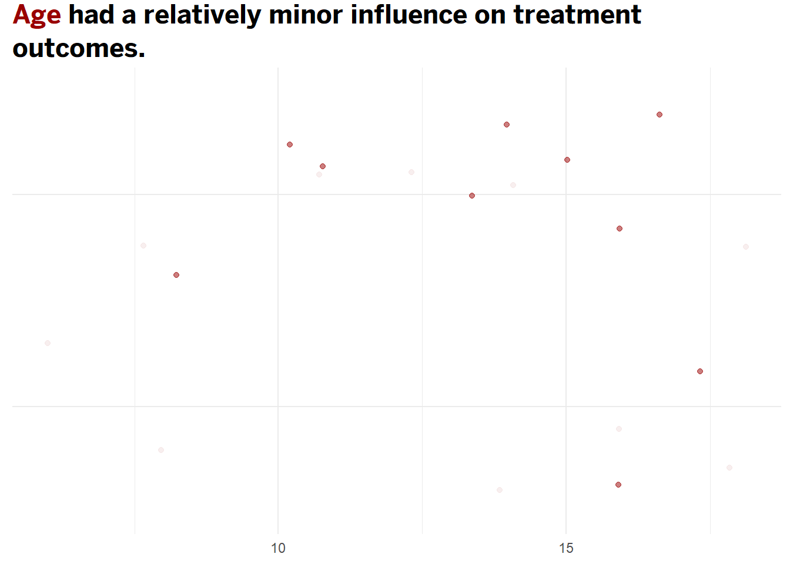

| Characteristic | Overall, N = 201 | Stented, N = 101 | Non-Stented, N = 101 | p-value2 |
|---|---|---|---|---|
| Age | 14 (11, 16) | 15 (12, 16) | 13 (9, 16) | 0.6 |
| Puberty stage | 0.6 | |||
| pre | 8 (40%) | 3 (30%) | 5 (50%) | |
| post | 12 (60%) | 7 (70%) | 5 (50%) | |
| Sex | >0.9 | |||
| Female | 13 (65%) | 7 (70%) | 6 (60%) | |
| Male | 7 (35%) | 3 (30%) | 4 (40%) | |
| BMI (percentile) | 97 (90, 99) | 99 (95, 99) | 95 (90, 97) | 0.079 |
| Headache | 19 (95%) | 10 (100%) | 9 (90%) | >0.9 |
| Vision changes | 10 (50%) | 5 (50%) | 5 (50%) | >0.9 |
| Diplopia | 4 (20%) | 1 (10%) | 3 (30%) | 0.6 |
| Papilledema | 17 (85%) | 9 (90%) | 8 (80%) | >0.9 |
| Tinnitus | 10 (50%) | 5 (50%) | 5 (50%) | >0.9 |
| Opening pressure (mmHg) | 32 (25, 40) | 33 (31, 39) | 26 (18, 41) | 0.4 |
| 1 Median (IQR); n (%) | ||||
| 2 Wilcoxon rank sum test; Fisher’s exact test; Pearson’s Chi-squared test | ||||
Cohort
Patient Demographics Overview
This study involved a diverse cohort of pediatric patients diagnosed with Idiopathic Intracranial Hypertension (IIH), focusing on those who underwent evaluation for venous sinus stenting. The demographic breakdown is detailed in the table below, which includes age, sex, puberty stage, and BMI percentile.
Age: IIH in pediatric patients is influenced significantly by age. Younger children often present with nonspecific symptoms, making the diagnosis challenging, whereas older children may display more classic symptoms of IIH like headaches and visual disturbances. The treatment and prognosis can also vary with age, making it a crucial demographic factor in studying and managing IIH.
Sex Distribution: The prevalence and characteristics of IIH can differ between sexes, particularly during adolescence. Females, especially post-pubertal, are more frequently affected, which might relate to hormonal changes that affect intracranial pressure and venous sinus dynamics. This makes sex an important variable in analyzing the efficacy of treatments like venous sinus stenting.
Puberty Stage: Changes during puberty, especially in overweight children, can increase the risk of developing IIH. Understanding the stage of puberty can help in correlating the severity and presentation of symptoms with the physiological changes occurring during this period.
BMI Percentile: Obesity is a well-recognized risk factor for IIH, particularly in older children and adolescents. The BMI percentile provides a measure of relative body weight and is critical for identifying at-risk pediatric patients. Higher BMI percentiles are associated with an increased risk of IIH, likely due to increased venous pressure and alterations in cerebrospinal fluid dynamics. This makes BMI percentile a significant factor in both the study and management of pediatric II
Understanding these demographic factors is essential for evaluating the impact of venous sinus stenting and its efficacy across different subgroups within the pediatric population. This comprehensive demographic analysis serves as the foundation for further detailed outcomes analysis presented later.
Preliminary statistical analyses were conducted to assess demographic differences between the stented and non-stented groups among pediatric patients with Idiopathic Intracranial Hypertension. The results indicated that there were no significant differences in age between the two groups (p = 0.6). Similarly, no significant differences in BMI percentiles between the groups (p = 0.08) nor categorical variables such as sex (p > 0.9) and puberty stage (p = 0.6).
Outcomes
Resolution of Symptoms
In pediatric patients with Idiopathic Intracranial Hypertension (IIH), symptom resolution following therapeutic interventions such as venous sinus stenting is a critical measure of treatment efficacy. Studies have shown that interventions aiming to reduce intracranial pressure can lead to significant improvement or complete resolution of primary symptoms, including headaches, visual disturbances, and papilledema. For instance, venous sinus stenting has been reported to alleviate symptoms in a substantial proportion of patients by improving venous outflow, thus reducing intracranial pressure. This outcome not only suggests an immediate relief from the debilitating symptoms associated with IIH but also indicates a potential long-term benefit in preventing further complications such as vision loss. The efficacy of stenting in symptom resolution underscores its value as a viable alternative to traditional medical and surgical treatments, which might not be effective or feasible for all patients.

The bar chart illustrates the proportion of pediatric patients with Idiopathic Intracranial Hypertension (IIH) experiencing symptom resolution post-treatment, categorized by stenting status. Each symptom—headache, vision changes, diplopia, papilledema, and tinnitus—is analyzed separately. The results clearly indicate that patients who received venous sinus stenting generally show a higher rate of symptom resolution compared to those who were not stented. This is particularly evident for symptoms such as headaches and papilledema, which are critical indicators of the severity of IIH.
The differential impact across various symptoms and between treatment groups underscores the need for a tailored approach in managing IIH. These findings advocate for considering venous sinus stenting as a viable treatment option, especially in cases where conventional medical management does not yield sufficient symptom control. This analysis thus provides compelling evidence supporting the targeted use of stenting in pediatric IIH patients, potentially guiding more personalized and effective treatment strategies.
Continuous Use of Hydrochlorothiazide
In typical studies and clinical reports, it’s noted that successful venous stenting can lead to a reduction in intracranial pressure, which might decrease the need for medications used to manage this condition. If a stent effectively alleviates the venous outflow obstruction that contributes to IIH, patients might experience symptom relief that could reduce or eliminate the need for continuous medical therapy.

Our analysis reveals that there are no significant differences in the continued use of hydrochlorothiazide between stented and non-stented patients at follow-up. This outcome was visualized in a bar chart showing the average continuation rates of hydrochlorothiazide across both groups, emphasizing that stenting does not appear to influence the necessity for ongoing medication usage in the context of managing IIH symptoms or related conditions. These findings suggest that while stenting may address certain physiological aspects of IIH, such as venous outflow, it does not universally negate the need for pharmacological intervention such as hydrochlorothiazide. This insight is crucial for clinicians as it underscores the importance of a comprehensive treatment approach that may still require medication management even when procedural interventions like stenting are employed.
Surgical Interventions Post-Procedure
While stenting often leads to substantial improvements, its effectiveness varies, with some patients experiencing incomplete symptom resolution. This variability underscores the necessity for ongoing assessments to determine if additional interventions, such as cerebrospinal fluid (CSF) shunting, are required.

Notably, a smaller proportion of the stented group required VP shunts compared to the non-stented group, suggesting that stenting might be mitigating the underlying conditions necessitating further surgical interventions. This outcome highlights the potential of stenting not only in alleviating symptoms but also in reducing the surgical burden on patients. By lessening the need for additional procedures like VP shunts, stenting could represent a significant advancement in the treatment paradigm for IIH, offering a less invasive and possibly more cost-effective approach to long-term management of the disease.
Linear Regression Analysis


Following the logistic regression analysis, the results suggest that higher BMI percentiles and the use of stenting significantly predict symptom resolution in pediatric patients with idiopathic intracranial hypertension (IIH), while age has a less pronounced effect. Specifically, the analysis indicates that patients with higher BMI percentiles are more likely to experience symptom resolution, highlighting the importance of body mass index as a factor in treatment outcomes. Moreover, stenting emerges as a critical intervention that markedly improves the likelihood of resolving symptoms compared to non-stented patients. This suggests that stenting not only alleviates the mechanical obstructions causing increased intracranial pressure but also leads to better clinical outcomes. In contrast, age does not show a strong influence on symptom resolution, indicating that younger and older pediatric patients are likely to benefit similarly from interventions aimed at reducing intracranial pressure. These findings underscore the effectiveness of targeted treatments like stenting in managing IIH and emphasize the need for tailored therapeutic strategies based on individual patient characteristics such as BMI.
Conclusion
This comprehensive study underscores the significant potential of venous sinus stenting as an effective intervention for pediatric patients with Idiopathic Intracranial Hypertension (IIH). The analysis demonstrated that stenting is particularly efficacious in alleviating critical symptoms such as headaches and papilledema, with a marked improvement in symptom resolution rates compared to non-stented patients. Furthermore, our findings highlight that while higher BMI percentiles are associated with better outcomes following stenting, age does not significantly affect the success of the treatment, suggesting that venous sinus stenting can be beneficial across a broad pediatric age spectrum. These insights advocate for the integration of venous sinus stenting into the treatment paradigms for IIH, especially in cases where traditional medical and surgical approaches may be less effective. Moving forward, continuous advancements in stenting techniques and a deeper understanding of patient-specific factors will be essential to optimize outcomes and further solidify the role of stenting as a cornerstone in the management of pediatric IIH.
QUIZ
Click here for the link to the slides.